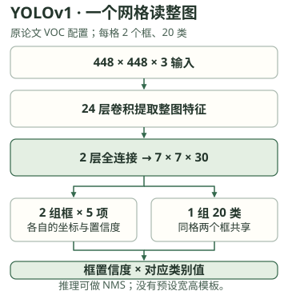

YOLOv1 · 历史模型原理
初代 YOLO 的
统一检测设计。
详细推导在本页保留；总览只保留贡献、结构要点和局限，避免初代篇幅压过后续演进。
回到统一检测的起点
YOLOv1：让一个网络，
直接给出整张图的检测预测。
初代 YOLO 的主要贡献，是把整图特征提取、定位和类别预测放进同一个可联合训练的网络。相较于先生成候选区域、再处理各区域的检测流程，这种设计缩短了从图像到预测的路径，也让预测能够利用整图上下文。它奠定了实时单阶段检测的一条重要路线，但不是后来所有 YOLO 结构的逐层模板。
本节采用原论文 Pascal VOC 配置：448×448 输入、S=7、B=2、C=20；YOLOv1 是对初代的后称。论文预印本发布于 2015 年，发表于 CVPR 2016。下文数值例子是假设数据，未运行模型。
网络怎样一次输出多个目标？

卷积层先处理整张图，全连接层再把整图特征映射成固定长度的预测。原版检测网络为 24 个卷积层 + 2 个全连接层，最后的 1470 个数按 7×7×30 解释。7×7 是输出和监督的空间组织方式，不是先切出 49 张小图、分别运行网络；这里也没有现代常见的三尺度预测头或 FPN / PAN 融合结构。
因此，49 个网格一共提供 98 个候选框，不是 1470 个框，也不是已经找到 98 个目标。两个预测器都可学习不同大小、长宽比的框；它们不是人为指定的小框和大框，更不是预先聚类出来的两个 Anchor。
框中心用相对所在网格的坐标表示，宽高用相对整张输入图的比例表示。网格决定预测责任，不把框的四条边限制在格子内；一个格子完全可以预测跨越多个格子的框。
用具体坐标理解：一个框怎样落到网格和输出数值上？
以 448×448 输入坐标为准，设 GT 为 (204,144,284,184)，中心为 (244,164)，宽高为 (80,40)。每格边长为 448÷7=64，因此中心落在从 0 开始计数的第 3 列、第 2 行，该格左上角为 (192,128)。
中心的格内相对坐标为 x=(244−192)/64=0.8125、y=(164−128)/64=0.5625；归一化宽高为 w=80/448≈0.1786、h=40/448≈0.0893。这些是几何目标，宽高在损失中还采用平方根形式比较。
反过来，利用格子索引与这些数值即可恢复原图中的框。这个例子中的右边界 284 已经超过该格右边界 256，说明“由该格负责”不等于“框只能画在该格里”。格内坐标和归一化是目标的参数化方式；原论文最后一层是线性的，不应直接套入 v3 的 Sigmoid 与 Anchor 指数解码。
没有 SimOTA 的时候，谁负责学习哪个目标？
分成两步：先按 GT 中心确定负责网格，再在该格的两个当前预测框中，选择与 GT 的 IoU 更高者承担定位监督。例如，上述 GT 由第 2 行、第 3 列负责；若本次两个框与它的 IoU 分别为 0.30 和 0.65，便选择第二个框预测器。判断依据是当前输出，不是比较预设 Anchor 形状。
网格归属由本次输入和标注决定；格内获选的预测器会随当前预测变化。因此，初代已经有读取预测质量的责任选择，不是整个训练开始前分配一次就不再改变。不过它只在中心所在格内选择，并非后来跨位置的 SimOTA、TAL 或全局集合匹配。
两个框预测器不等于同格可以可靠监督两个不同目标。原始设计每格只有一套类别与目标责任表示。同格出现多个目标中心时，会发生表示和监督冲突；不能把两个框理解成两个独立的、带各自类别标签的完整目标槽位。
损失怎样让这些输出各自学到有用的含义？
窄屏可左右滚动查看监督范围。
| 输出 | 监督对象与目标 | 这样安排的原因 |
|---|---|---|
| 中心与宽高 | 只对负责预测器约束 x、y、√w、√h，坐标权重 λcoord=5。 | 把定位责任集中到选中预测器；宽高平方根使同样绝对尺寸误差对小框更敏感。 |
| 负责框的置信度 | 目标是其当前预测框与 GT 的 IoU。 | 高分既需要指向目标，也应反映定位质量；该分数不是单纯的类别概率。 |
| 未负责框的置信度 | 按 no-object 项压向 0，权重 λnoobj=0.5。 | 降低无目标或未负责预测的高分，同时减轻大量背景项对训练的主导。 |
| 网格类别 | 有目标的负责网格学习类别；空网格不计算类别项。 | 类别按网格组织，并非给每个框分别设置一套类别监督。 |
四类约束合起来，才把固定长度输出塑造成“框在哪里、预测是否可信、目标是什么”。这里只使用当前 IoU 来选责任或设置置信度目标，不等于定位损失已经是 IoU / CIoU；平方误差也不完全对齐最终检测指标。
训练、激活与实现口径：哪些应按原论文理解？
原论文先以 224×224 输入在 ImageNet 上预训练前 20 个卷积层，再添加 4 个卷积层与 2 个全连接层，转为 448×448 检测训练。隐藏层使用负半轴斜率 0.1 的 Leaky ReLU，最后一层为线性输出；不能把后来的 BCE、SiLU 或 DFL 当作初代配方。
训练使用动量 SGD、分阶段学习率和初期较小学习率，并通过全连接层后的 Dropout、随机缩放平移及曝光、饱和度变化抑制过拟合。这些是配套训练策略，不改变每格共享类别的输出限制。
原论文和仓库后续配置要分开：本节固定 S=7、B=2、C=20。2026-11-26 核对的原作者 master 分支 cfg/yolov1.cfg 已含 BN、local 层、B=3 和 1715 个输出，与论文配置不同。它能作为实现演变的参照，不能用来反推论文原版就是同一结构。仓库配置 · 检测层实现。
一次前向之后，为什么还需要分数筛选和 NMS？
每个框输出自己的置信度，含义为 Pr(Object) × IoU；每格另有共享的条件类别输出 Pr(Class | Object)。推理时两者相乘，得到该框的类别相关分数。若某格的“狗”类别输出为 0.8、其中一个框的置信度为 0.6，该框的“狗”分数就是 0.48。这是假设数值；推理时没有 GT，置信度来自网络估计，不是现场拿真实框计算 IoU。
先按分数过滤，再用 NMS 抑制同类重叠预测。虽然训练给一个目标选一个负责预测器，相邻网格或其他预测仍可能对同一目标给出高分；训练责任的唯一性不保证最终输出集合没有重复。“You Only Look Once”指整图一次网络求值；初代的端到端联合训练，与后来 NMS-free 的输出去重设计不是同一层含义。
它解决了什么，又留下了什么问题？
初代证明了统一整图预测可以达到实时速度，也能利用整图上下文减少部分背景误检；代价是当时定位精度和召回仍有不足。粗网格、较粗的深层特征与每格共享类别，尤其不利于密集小目标。固定全连接输出也不如后来全卷积结构便于调整输入与输出网格。这里应把“统一、实时”的贡献与“定位仍有限”的边界一起保留。
窄屏可左右滚动查看演进关系。
| 版本 | 核心设计 | 相对前面的问题，改变了什么？ |
|---|---|---|
| YOLOv1 | 整图卷积 + 全连接；单个 7×7 输出网格；不使用预设宽高 Anchor。 | 统一定位与类别预测，但同格多目标、细粒度定位和召回受到限制。 |
| YOLOv2 | 改为全卷积检测，采用聚类 Anchor、逐 Anchor 类别预测、BN、细粒度特征直通与多尺度训练。 | 增加预测机会、改善学习与召回；多尺度训练主要改变输入分辨率，不等于 v3 式三个输出尺度。普通检测模型 v2 也要与 YOLO9000 的联合训练区分。 |
| YOLOv3 | Darknet-53 残差主干、跨层融合，在三个尺度输出 Anchor 检测预测。 | 把不同分辨率的特征用于检测，为尺度差异和小目标提供更合适的预测条件；仍不是三个尺度各自独占小、中、大目标。 |
所以，初代没有 Anchor，并不意味着它已经具备现代 Anchor-free 检测器的全部设计。后来 YOLOX、v8 等是在不同特征结构、输出头与样本分配条件下去掉预设宽高，不能概括成“重新回到 v1”，也不能把三尺度、解耦头或 NMS-free 倒写成初代已有的特点。
原论文的速度与精度结果应该怎样读？
原论文表 1 中，标准 YOLO 为 VOC 2007 mAP 63.4、45 FPS；更小的 Fast YOLO 为 52.7、155 FPS。论文说明其网络速度以 Titan X、单图非批处理衡量。这些结果用于说明当时的精度与速度取舍，不与今天不同数据集、AP 定义、硬件和推理后端的数字直接排名；本地没有复现这些指标。Fast YOLO 的较浅网络也不应与标准版 24 个卷积层混为一谈。
把初代放回六条机制主线
- ① 特征提取与多尺度融合：整图卷积提取特征，尚无后来常见的跨层多尺度检测结构。
- ② 预测头与边界框表示：全连接输出、中心宽高、无预设 Anchor；每格的两个框共享类别。
- ③ 样本分配与任务对齐：GT 中心确定网格，格内按当前 IoU 选择负责框；与后续样本分配对照其候选范围与责任规则。
- ④ 损失与训练监督：加权平方误差、宽高平方根、负责与未负责预测分别监督；继续看各版本损失的变化。
- ⑤ 重复预测与 NMS-free：一次前向仍可产生重复预测，原版使用 NMS；与v10 的集合去重目标区分。
- ⑥ 精度、效率与场景适配：实时统一检测成立，但密集小目标、召回和定位误差构成下一代设计的出发点。
核对日期：2026-11-26。原始依据：YOLO 原论文 §2：输出、训练、推理与局限 · YOLO9000 / v2 §2：全卷积、Anchor 与召回改进 · YOLOv3 §2：三尺度预测与残差主干。切换到 v1 / v3 对照。